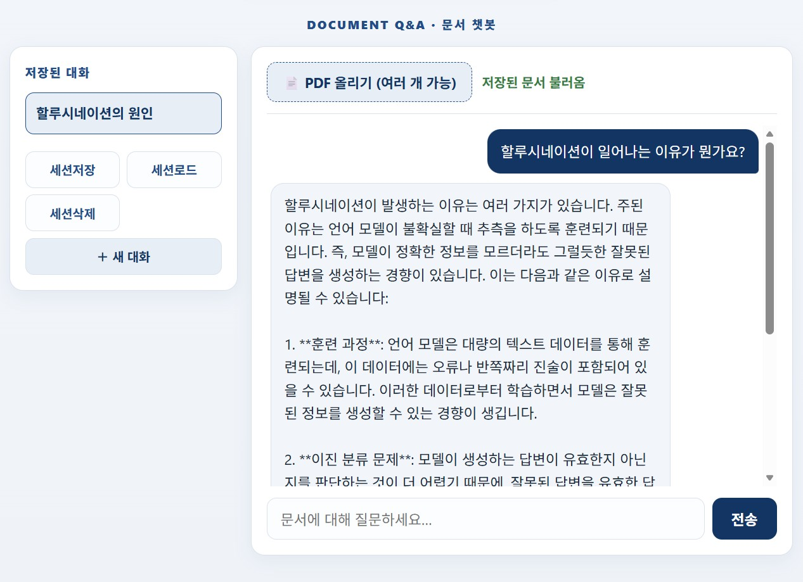

Day 2 · AI 애플리케이션 개념과 PRD 작성 — 실습
이론에서 익힌 RAG·PRD 개념을 바탕으로, 내가 만들 앱의 설계도(PRD)를 직접 완성하는 실습입니다. STEP 1부터 순서대로 진행하십시오.
개념이 헷갈리면 각 단계의 "관련 이론" 링크로 이론 문서를 참고하세요.
PRD.md 한 편 (다음 개발의 지도)- hello-page 폴더에서 작업 시작
Day 1에서 바탕화면에 만든
hello-page폴더를 그대로 씁니다. 이 폴더엔 이미index.html(자기소개·시계)·.env(OpenAI 키)·재정경제부.svg로고가 다 들어 있어, 새로 만들 게 없습니다.- Claude Desktop의 작업 폴더가 Day 1과 같은 바탕화면(=
hello-page가 들어 있는 위치)으로 지정되어 있는지 확인합니다.(새 대화에서 폴더 지정 화면이 다시 뜨거나 바뀌어 있으면, Day 1 STEP 2처럼 바탕화면을 선택하면 됩니다.) .env에OPENAI_API_KEY가 들어 있는지 확인합니다.(없으면 Day 1 STEP 6의 "OpenAI 키는 내가 직접 넣기"처럼.env를 메모장으로 열어 넣으세요 — 키가 채팅에 남지 않는 방법입니다.)
- Claude Desktop의 작업 폴더가 Day 1과 같은 바탕화면(=
- Day 1 작업이 잘 완료됐는지 AI로 점검하기
본격 시작 전, Day 1 작업이 핸드북 의도대로 끝났는지 Claude에게 점검을 맡깁니다. Claude가 핸드북의 Day 1 실습 페이지를 직접 읽고 내 폴더와 비교해, 빠진 것을 찾아 줍니다. 지금 채우고 시작해야 뒤 단계에서 오류가 나지 않습니다.
프롬프트Day 1 실습이 잘 완료됐는지, 아래 핸드북과 비교해 점검해줘. - 이 실습이 따라온 핸드북의 Day 1 실습 페이지야: https://innocurve-vibe-coding-handbook.vercel.app/day1/day1_Examples.html - 바탕화면의 hello-page 폴더는 Day 1 실습을 모두 마친 상태의 작업 폴더야. - 핸드북 Day 1의 의도대로 잘 완료되어 있는지 폴더 내용을 확인해서, 잘 된 것과 빠지거나 어긋난 것을 체크리스트로 알려줘. - 빠진 것이 있으면, 핸드북의 어느 STEP으로 돌아가 어떻게 채우면 되는지도 알려줘. - 점검할 때 .env나 .mcp.json 안의 비밀 키 값은 화면에 그대로 출력하지 말아줘.
점검 결과 모두 완료로 나오면 바로 다음 2️⃣로 넘어가고, 누락 항목이 나오면 안내된 Day 1 STEP으로 돌아가 채운 뒤 진행하세요.
- Day 1 페이지에 RAG 챗봇 페이지 붙이기
Day 1에서 만든 프로필 페이지에 "RAG 챗봇" 바로가기 버튼을 달고, 버튼을 누르면 열리는 챗봇 페이지를 새로 만듭니다. 그 페이지에서 문서를 올려, 문서 내용을 근거로 답을 받습니다.
프롬프트이 프롬프트는 Day 1에서 만든 웹페이지에 "문서를 올려 물어보는 RAG 챗봇"을 붙이기 위한 요청입니다. 아래 내용대로 만들어줘. - Day 1에서 만든 프로필 페이지는 그대로 두고, 화면 위쪽에 "RAG 챗봇" 바로가기 버튼을 하나 추가해줘. 그 버튼을 누르면 챗봇 화면으로 이동하게 해줘. - 챗봇 화면에는 이런 것들이 있어야 해: · 문서(PDF)를 올리는 곳 — 여러 개 올려도 되고, 올리면 "문서 준비 완료"라고 표시해줘. (설치 없이 브라우저 안에서 바로 글자를 읽는 방식으로.) · 질문을 입력하는 칸과 보내기 버튼, 그리고 주고받은 대화가 쌓이는 목록. · 질문을 보내면, 올린 문서의 내용만 근거로 삼아 답해줘. 문서에 없는 내용은 지어내지 말고 "문서에 없습니다"라고 답하고, 존댓말 한국어로. (친절한 선생님처럼 쉽게, 하지만 내용은 빠뜨리지 말고 모두 답해줘.) - 비밀 키(OpenAI 키)는 화면에 절대 적지 말고, 화면 뒤에서만 다루게 해줘. 키는 .env에 넣어 둔 값을 쓰고, 비용이 적게 드는 gpt-4o-mini 모델을 써줘. - 전체 디자인은 Day 1의 파란색 계열과 어울리게 맞춰줘.문서가 아주 길면 한 번에 보낼 수 있는 양에 한계가 있습니다. 실습은 짧은 문서 1~2개로 시작하세요.
테스트할 문서가 없다면 아래 예시 PDF를 내려받아 사용하세요.
📄 예시 PDF 내려받기 — why-language-models-hallucinate.pdf(AI 언어모델이 왜 없는 사실을 지어내는가(환각)를 다룬 공개 논문입니다.)
문서를 챗봇에 올리는 것은 그 내용을 외부(AI 서비스)로 보내는 것입니다. 그러니 실습에는 개인정보(이름·주민번호·연락처 등)나 대외비·기밀 문서를 올리지 마세요. 공개돼 있거나 공개해도 되는 안내문·매뉴얼만 쓰고, 마땅한 게 없으면 위 예시 PDF를 사용하세요. (업무에서 AI를 쓸 때도 원칙은 같습니다 — "이 문서를 외부에 보내도 되는가?"를 늘 먼저 확인합니다.)
지금까지는 새로고침하면 대화가 사라집니다. Day 1 STEP 6(로그인)에서 만든 Supabase(계정·키·.env의 SUPABASE_URL·SUPABASE_ANON_KEY)를 그대로 재사용해, 대화와 올린 문서를 세션째 저장·복원합니다.
- ① 대화 저장용 표(테이블) 만들기
이 단계는 대화 내용과 올린 문서를 저장해 둘 "표"를 데이터베이스에 만들기 위한 작업입니다. Day 1에서 Supabase 연결(Access Token)을 이미 해 두었으므로, Claude가 표를 만드는 SQL을 작성하고 Supabase에 실행까지 자동으로 처리합니다.
프롬프트이 프롬프트는 대화 내용을 저장할 표(데이터베이스 테이블)를 만들기 위한 프롬프트입니다. 해당 작업을 시행하기 위해 아래 요청대로 진행해주세요. - 대화를 저장할 표를 만드는 SQL을 sessions-ref.sql 파일로 만들고, Day 1에서 연결해 둔 Supabase에 그 SQL을 바로 실행까지 해줘. - 아래 두 가지 표가 필요해: · 대화 세션 표: 세션 번호, 제목, 올린 문서 전체 글자, 만든 시각 · 메시지 표: 메시지 번호, 어느 세션인지 연결, 보낸 쪽(사용자/AI), 내용, 시각 - 실습용이니 anon 키로 저장·조회·삭제가 되도록 해줘. - 이미 같은 표가 있으면 지우고 다시 만드는 형태로 써줘.
완료되면 Supabase 대시보드의 Table Editor에서 표 두 개가 생겼는지 확인하면 됩니다.(
.env에SUPABASE_URL·SUPABASE_ANON_KEY가 없으면 Day 1 STEP 6에서 쓴 값을 그 두 줄로 추가하세요.) - ② 대화 저장·불러오기·삭제 기능 붙이기
이제 챗봇 화면에서 대화를 저장하고, 목록에서 다시 불러오고, 지우는 기능을 붙입니다. 앞에서 만든 표에 연결하며, 따로 설치할 것은 없습니다.
프롬프트이 프롬프트는 챗봇에 "대화를 저장하고 다시 불러오는" 기능을 붙이기 위한 요청입니다. 해당 작업을 시행하기 위해 아래 내용대로 만들어줘. 저장은 앞에서 만든 Supabase 표를 쓰고(따로 설치 없이 연결), 접속 정보는 .env에 넣어 둔 Supabase 값을 써줘. [뒤에서 처리하는 부분 — 아래 네 가지] - 대화 저장: 지금까지의 대화와 올린 문서를 저장해줘. 첫 질문·답을 짧게 요약해 대화 제목으로 붙이고, 기존 대화는 두고 새로 쌓이게. - 대화 목록: 저장된 대화들을 최신순으로 가져와줘. - 대화 불러오기: 고른 대화의 문서와 내용을 화면에 그대로 되살려줘. - 대화 삭제: 고른 대화를 지워줘. [화면 — 문서 Q&A 옆에 사이드바 추가] - 저장된 대화 목록 + [저장] [불러오기] [삭제] [새 대화] 버튼. - 목록에서 대화를 고르면 그 문서·대화가 화면에 다시 나오게 해줘. - 키(OpenAI·Supabase)를 다루는 코드는 화면에 절대 넣지 마(뒤쪽 처리 부분만 다룸). - 위쪽 화면들과 어울리게 파란색 계열로.
답변이 끝날 때마다 자동으로 저장되게 하려면 이어서 "답변이 끝날 때마다 방금 주고받은 내용을 지금 대화에 자동 저장해줘(저장된 대화가 없으면 새로 만들고)"라고 요청하면 됩니다.

OPENAI_API_KEY·SUPABASE_URL·SUPABASE_ANON_KEY는 .env에만 두고 index.html·api/*.js에 직접 적지 마세요. GPT 호출은 API 사용료가 조금씩 과금됩니다(문서를 근거로 함께 보내므로 문서가 길수록 비용이 늘어납니다). 이 앱을 인터넷에 공개 배포할 때는 .gitignore에 .env를 추가하고, Vercel 프로젝트 설정의 환경 변수에 세 키를 모두 등록해야 합니다. 그리고 앱 안에 넣어 둔(내장한) 문서는 인터넷에 공개 배포하면 그 주소로 열람될 수 있으니, 공개할 앱에는 개인정보·대외비 문서를 넣지 마세요.
hello-page(자기소개·시계·로그인·RAG 챗봇)를 누구나 접속할 수 있는 인터넷 주소로 공개합니다. 지금까지 해 온 것처럼 프롬프트 하나로 — GitHub 업로드부터 Vercel 배포, 키 등록까지 Claude가 자동으로 진행합니다. 비밀 키가 담긴 .env는 GitHub에 올리지 않고, Vercel 환경 변수로 등록해 안전하게 공개합니다.
- 배포 요청하기
아래 프롬프트를 붙여넣으면 Claude가 ① 코드를 GitHub 저장소에 올리고(
프롬프트.env제외), ② Vercel에 연결해 배포하고, ③.env의 키들을 Vercel 환경 변수로 등록하는 것까지 한 번에 진행합니다.이 프롬프트는 지금까지 만든 hello-page를 인터넷에 공개(배포)하기 위한 프롬프트입니다. 해당 작업을 시행하기 위해 아래 요청대로 진행해주세요. github에 push하고 vercel로 배포해줘. - GitHub에 hello-page라는 공개(Public) 저장소를 만들고, 지금 폴더의 코드를 올려줘. 단, 비밀 키가 든 .env 파일은 절대 올라가면 안 돼(.gitignore 확인해줘). - Vercel에 이 저장소를 연결해서 배포해줘. - .env에 있는 SUPABASE_URL, SUPABASE_ANON_KEY, OPENAI_API_KEY 세 값을 Vercel 환경 변수로 등록해줘. 키 값은 채팅 화면에 보여주지 말고, 파일에서 바로 읽어 등록해줘. - 중간에 로그인(GitHub·Vercel)이 필요하면 멈추고, 처음 쓰는 사람도 따라 할 수 있게 순서대로 친절하게 알려줘. 내가 "로그인했어"라고 답하면 이어서 진행해줘. - Vercel이 토큰(token) 입력이 필요하다고 하면 .env의 VERCEL_TOKEN 값을 읽어서 사용해줘. 아직 .env에 없으면 토큰 만드는 방법을 알려주고, 내가 .env에 넣을 때까지 기다려줘. 토큰 값도 채팅 화면에 절대 보여주지 마. - 배포가 끝나면 공개 주소를 알려주고, 접속해서 확인할 항목도 알려줘.
처음 한 번은 GitHub·Vercel 로그인(인증) 안내가 나올 수 있습니다. 안내가 뜨면 당황하지 말고 아래 2️⃣ 로그인(인증) 안내를 보면서 그대로 따라 하면 됩니다 — 한 번 해 두면 다음부터는 묻지 않습니다.
- 공개 주소에서 확인
배포된
https://hello-page-xxxx.vercel.app에 접속해 회원가입·로그인 → 문서 질문이 인터넷에서도 되면 성공입니다. 앞으로 코드를 고친 뒤 "github에 다시 올리고 재배포해줘"라고 하면 바뀐 내용이 자동으로 반영됩니다.
- 계정 준비 (아직 없다면)
github.com에서 GitHub 계정을 만들고, vercel.com은 첫 화면에서 "Continue with GitHub"를 눌러 GitHub 계정으로 가입하는 것이 가장 간단합니다. 둘 다 무료(Hobby) 플랜이면 충분합니다.
- GitHub 로그인 — 브라우저에서 코드 입력
배포 중 Claude가 멈추고 "github.com/login/device 에서 코드 ○○○○-○○○○를 입력하세요" 같은 안내를 하면, 브라우저로 그 주소를 열어 코드를 입력하고 승인(Authorize) 버튼을 누르면 됩니다. 끝나면 채팅에
로그인했어, 계속해줘라고 답하세요. - Vercel 로그인 — 브라우저에서 확인 버튼
Vercel도 마찬가지로, Claude가 알려 주는 주소를 브라우저로 열어 로그인 → 확인(Verify) 버튼만 누르면 됩니다. 이때도 GitHub 계정으로 로그인하는 것이 가장 쉽습니다.
- 브라우저 로그인이 어려울 때 — Vercel 토큰을
.env에 넣기Claude가 "Vercel 토큰(token)이 필요하다"고 하면, 토큰(비밀번호 대신 내 계정임을 증명하는 긴 문자열)을 발급받아
.env에 넣어 주면 됩니다.① 브라우저에서 vercel.com/account/tokens 접속(또는 Vercel 오른쪽 위 프로필 → Account Settings → Tokens) ② Create 버튼을 눌러 이름은 아무거나(예:
claude-deploy), 만료 기간(Expiration)은 짧게 정해 생성 ③ 화면에 딱 한 번만 보여 주는 토큰을 복사 ④hello-page폴더의.env파일을 메모장으로 열어 맨 아래에 한 줄을 추가하고 저장합니다.VERCEL_TOKEN=여기에_복사한_토큰_붙여넣기
저장했으면 채팅에
.env에 VERCEL_TOKEN 넣었어, 이걸로 진행해줘라고 답하세요. Claude가 파일에서 토큰을 읽어(화면에 보여주지 않고) 이어서 배포합니다.
.env 파일에만 넣으세요(.env는 .gitignore 덕분에 GitHub에 올라가지 않습니다). ② 배포가 끝난 뒤에는 Vercel의 Tokens 화면에서 토큰을 삭제(Delete)해 두면 더 안전합니다.
.env는 절대 GitHub에 올리지 마세요. 키는 로컬에선 .env, 공개 배포에선 Vercel 환경 변수 — 두 곳에 같은 값을 둡니다. ② 공개하면 누구나 접속·질문할 수 있어 OpenAI 사용료가 과금되니, 필요하면 가입·사용 범위를 제한하세요. ③ 배포 후 오류가 나면 Vercel의 "Logs" 메시지를 그대로 붙여넣어 "이 오류 고쳐줘"라고 요청하면 됩니다.
prd_lite.md라는 가벼운 기획서를 먼저 정리합니다. "한 마디 정의 · 누가 왜 쓰는지 · 핵심 기능 2개(+AI가 지킬 규칙) · 안 만들 기능 · 디자인 느낌" 다섯 항목을 채웁니다.이번엔 메모장에 직접 적지 않습니다. 항목 하나하나를 Claude와 의견을 주고받으며 함께 계획하고 채워나갑니다 — 미리 계획부터 세우고 시작하는 게 아니라, 매 항목마다 Claude가 먼저 제안하면 내가 다듬고 합의된 내용만 파일에 반영하는 방식입니다.
- my-app 폴더 만들고 작업 폴더로 지정
STEP 1에서는
hello-page에 RAG 챗봇을 이어 붙였고, 여기서부터는 내가 실제로 계획·설계해 나갈 내 앱 프로젝트를 위해 새 폴더에서 시작합니다. 이번에는 폴더를 내 손으로 직접 만들고, 새 세션에서 그 폴더를 작업 폴더로 지정합니다.- 바탕화면(Desktop) 빈 곳에서 마우스 오른쪽 → 새로 만들기 → 폴더를 눌러, 이름을
my-app으로 지어 폴더를 직접 만듭니다.(한글·공백 없는 영문 이름 그대로 입력하세요.) - Claude Desktop에서 새 대화(새 세션)를 열고, 작업 폴더를 방금 만든
my-app폴더로 지정합니다.(폴더 지정 화면이 뜨면 바탕화면의my-app을 선택하세요. 방법이 기억나지 않으면 Day 1 STEP 2를 참고하세요.) - 잘 지정됐는지 궁금하면 채팅에 "지금 작업 폴더가 어디야?"라고 물어 확인합니다.
- 바탕화면(Desktop) 빈 곳에서 마우스 오른쪽 → 새로 만들기 → 폴더를 눌러, 이름을
- prd_lite.md 빈 틀 만들기
기획서 형식의 가벼운 문서부터 시작합니다. 아래 프롬프트로 빈 틀을 먼저 만듭니다.
프롬프트이 프롬프트는 내 앱의 가벼운 기획서(prd_lite.md)를 작성하기 전에, 먼저 그 빈 틀(양식)을 파일로 만들어 두기 위한 프롬프트입니다. 해당 작업을 시행하기 위해 아래 요청대로 진행해주세요. my-app 폴더에 prd_lite.md 파일을 직접 만들어줘. 아래 형식 그대로 빈 틀을 만들어줘. 제목·안내 문구·예시는 그대로 두고, "답변:" 뒤와 [ ] 안만 비워둬. # [프로젝트 이름] 서비스 기획서 (PRD_lite) - 작성자: [이름] - 작성일: (오늘 날짜) --- ## 1. 이 앱은 한 마디로 무엇인가요? - 답변: --- ## 2. 누가 쓰고, 왜 쓰나요? (딱 한 줄씩만!) - 누가 쓰나요? - 답변: - 어떤 불편을 해결하나요? - 답변: --- ## 3. 개발할 핵심 기능 (딱 2가지만!) > 💡 너무 많은 기능을 만들려고 하면 AI가 코드를 꼬아버립니다. > 가장 중요한 2개 기능만 "규칙"을 정해 알려주세요. ### 1) [기능 이름] - 설명: - AI가 꼭 지켜야 할 규칙: - ### 2) [기능 이름] - 설명: - AI가 꼭 지켜야 할 규칙: - --- ## 4. 이번에 절대 만들지 않을 기능 (욕심 버리기) > 💡 AI에게 미리 "이건 안 만들 거야"라고 선언해야 엉뚱한 코딩을 안 합니다. - --- ## 5. 디자인 느낌과 색상 고르기 - 전체적인 분위기: - 메인 색상: - 화면 크기 제약:
Claude가 파일을 만들어도 되는지 물으면 "허용(Allow)"을 누릅니다.
- Claude와 함께 계획하며 채우기
이어서 아래 프롬프트를 붙여넣습니다. Claude가 한 번에 계획을 세우고 끝내는 게 아니라, 항목 하나마다 먼저 의견을 제안하고 내 생각을 물어본 뒤, 합의된 내용만 그때그때 파일에 반영하고 다음 항목으로 넘어갑니다.
프롬프트이 프롬프트는 방금 만든 기획서 빈 틀(prd_lite.md)의 다섯 항목을 Claude와 대화를 주고받으며 하나씩 채워가기 위한 프롬프트입니다. 해당 작업을 시행하기 위해 아래 요청대로 진행해주세요. prd_lite.md의 다섯 항목을 아래 순서로 나와 함께 하나씩 채워나가자. 1) 이 앱은 한 마디로 무엇인가 2) 누가 쓰고, 왜 쓰는가 3) 개발할 핵심 기능 (딱 2가지만, 각각 AI가 지킬 규칙까지) 4) 이번에 절대 만들지 않을 기능 5) 디자인 느낌과 색상 - 한꺼번에 다 쓰지 말고, 항목마다 먼저 네 생각(초안)을 제안하고 내 의견을 물어봐줘. 나는 "맞다/아니다, 이건 이렇게" 정도로만 답할게. - 내가 답하면 그 의견을 반영해 자연스러운 문장으로 다듬고, 둘이 합의한 내용만 prd_lite.md에 채운 다음 다음 항목으로 넘어가자. - 특히 3)은 기능이 2개를 넘지 않게 하고, 숫자·조건이 들어간 구체적인 "AI가 지킬 규칙"을 함께 뽑아줘. - 4)는 이번에 안 만들 것을 분명히 정해서 욕심이 커지지 않게 잡아줘. - 다섯 항목이 다 끝날 때까지 이 방식을 반복해줘.
- 결과 확인
my-app폴더의prd_lite.md를 열어 다섯 항목이 채워졌는지 확인합니다. 아래는 완성된 예시입니다.prd_lite.md 작성 예시 — 사내 규정 Q&A 챗봇# 사내 규정 Q&A 챗봇 서비스 기획서 (PRD_lite)
- 작성자: 홍길동
- 작성일: 2026-07-19
1. 이 앱은 한 마디로 무엇인가요?
사내 규정 문서를 올리면 질문에 근거와 함께 답해주는 채팅형 Q&A
2. 누가 쓰고, 왜 쓰나요?
누가: 사내 규정을 자주 찾아보는 직원 / 불편: 수십 쪽 규정에서 원하는 조항을 찾느라 매번 10분 넘게 헤맴
3. 개발할 핵심 기능 — 기능마다 AI가 지킬 규칙을 함께 적습니다
1) 문서 기반 질문 답변
· 규칙: 답변은 업로드한 문서 내용만 근거로 삼는다. 문서에 없는 내용은 지어내지 말고 "문서에서 찾을 수 없습니다"라고 답한다. 답변마다 근거가 된 부분(조항·문장)을 함께 표시한다.
2) 여러 문서(PDF) 업로드
· 규칙: 여러 개의 PDF를 한 번에 올릴 수 있게 한다. 준비가 끝나면 화면에 "문서 준비 완료"만 표시하고 다른 안내 문구는 넣지 않는다.
4. 이번에 절대 만들지 않을 기능
로그인·회원가입, 이미지·표 인식, 다국어 지원
5. 디자인 느낌과 색상 고르기
신뢰감 있고 깔끔한 사내 시스템 느낌 / 파란색 계열 / PC·모바일 모두 잘 보이게
prd_lite.md를 뼈대 삼아, Claude Desktop으로 PRD.md 파일을 만들고 여덟 항목으로 고도화합니다. 개발에 쓸 기술 스택도 여기서 Claude가 제안하는 난이도별 옵션 중에서 직접 고릅니다.
- PRD 템플릿 만들기
Claude Desktop 대화창에 아래 프롬프트를 붙여넣어, 빈
프롬프트PRD.md템플릿을 만들게 합니다. 파일 생성을 물으면 "허용(Allow)" 합니다.이 프롬프트는 정식 기획서(PRD.md)를 작성하기 전에, 먼저 여덟 항목짜리 빈 틀(양식)을 파일로 만들어 두기 위한 프롬프트입니다. 해당 작업을 시행하기 위해 아래 요청대로 진행해주세요. my-app 폴더에 PRD.md 파일을 직접 만들어줘. 아래 여덟 항목으로 빈 템플릿을 만들어줘. 각 항목은 마크다운 제목(##)으로 넣고, 그 바로 아래에 무엇을 적는 칸인지 한 줄 설명을 이탤릭체로 넣어줘. 1) 추진 배경 (문제 정의) — 누가, 어떤 업무에서, 어떤 불편을 겪는가 2) 현행 방식과 한계 — 지금은 이 일을 어떻게 처리하고 있고, 무엇이 아쉬운가 3) 목표와 기대효과 (성공 기준) — 측정 가능한 숫자로 (처리 시간, 문의 건수, 정답률 등) 4) 사용자와 이용 흐름 — 누가 쓰는지와 사용 순서 (화살표로) 5) 주요 기능 (must / nice로 구분) 6) 범위와 비범위 — 이번 실습에서 만들 것 / 만들지 않을 것 7) 보안·개인정보 검토 — 사용 문서의 공개등급, 개인정보 여부, API 키 관리 방법 8) 기술 스택 — 개발에 사용할 도구 모음 (난이도별 옵션 중 내가 고른 것과 그 이유)
- prd_lite.md 기반으로 고도화해서 채우기
손으로 다시 옮겨 적지 않고, Claude가
프롬프트prd_lite.md를 직접 읽어 PRD.md를 채우게 합니다.이 프롬프트는 앞에서 만든 가벼운 기획서(prd_lite.md)의 내용을 바탕으로, 정식 기획서(PRD.md)의 여덟 항목을 채우기 위한 프롬프트입니다. 해당 작업을 시행하기 위해 아래 요청대로 진행해주세요. prd_lite.md를 직접 읽고, 그 내용을 바탕으로 PRD.md의 아래 항목들을 채워줘. - 맨 위에 "# [프로젝트 이름] 서비스 기획서 (PRD)" 제목과 작성자·작성일 머리말을 prd_lite.md와 똑같이 넣어줘. - 추진 배경 (문제 정의) ← prd_lite.md의 "1. 한 마디로 무엇인가"와 "2. 누가 쓰고 왜 쓰나"를 문장으로 다듬어서 - 주요 기능 ← prd_lite.md의 "3. 개발할 핵심 기능"과 그 아래 "AI가 지킬 규칙"을 그대로 옮겨서 - 범위와 비범위 ← 범위는 3)의 기능들, 비범위는 prd_lite.md의 "4. 절대 만들지 않을 기능"을 그대로 나머지 항목(현행 방식과 한계, 목표와 기대효과, 사용자와 이용 흐름, 보안·개인정보 검토)은 위 내용에 맞게 적절히 제안해서 채워줘. 단, "기술 스택" 항목은 바로 채우지 말고 이렇게 진행해줘: - 내 앱에 맞는 기술 스택(개발에 사용할 도구 모음)을 난이도별로 3가지 옵션으로 제안해줘. · 옵션 1 (쉬움) · 옵션 2 (보통) · 옵션 3 (도전) - 옵션마다 어떤 도구들의 조합인지와, 비개발자도 이해할 수 있는 쉬운 설명을 한 줄로 붙여줘. (예: "지금까지 실습에서 쓴 것과 같은 구성이라 가장 익숙해요") - 내가 옵션 하나를 고르면, 그때 고른 내용과 고른 이유를 PRD.md의 "기술 스택" 항목에 채워줘. prd_lite.md의 "5. 디자인 느낌과 색상"은 PRD.md에는 넣지 말고, 나중에 실제 화면을 만들 때 다시 참고하게 그대로 남겨줘.
프롬프트를 보내면 Claude가 다른 항목들을 먼저 채운 뒤, 기술 스택 옵션 3가지를 제안하며 멈춥니다. 마음에 드는 옵션 번호로 답하면 "기술 스택" 항목까지 채워집니다. 그다음에 아래 "결과 확인"으로 넘어가세요.
- 결과 확인
my-app폴더의PRD.md를 열어 여덟 항목이 내 앱에 맞게 채워졌는지 확인합니다. 아래는 완성된 PRD의 예시입니다.PRD.md 작성 예시 — 사내 규정 Q&A 챗봇# 사내 규정 Q&A 챗봇 서비스 기획서 (PRD)
- 작성자: 홍길동
- 작성일: 2026-07-19
1) 추진 배경 (문제 정의)
담당자가 수십 쪽 규정에서 원하는 조항을 찾느라 매번 10분 넘게 헤맨다.
2) 현행 방식과 한계
사내 게시판의 규정 PDF를 Ctrl+F로 검색하거나 담당 부서에 직접 문의한다. 문서가 많아 검색이 안 되고, 담당자 응답을 기다려야 해 느리다.
3) 목표와 기대효과 (성공 기준)
문서를 올린 뒤 질문하면, 관련 조항을 근거와 함께 30초 안에 답한다. (문의 응대 시간 10분 → 30초)
4) 사용자와 이용 흐름
담당자가 문서 업로드 → 직원이 질문 입력 → 문서에서 검색 → 답변+근거 표시 → (못 찾으면) 모른다고 답
5) 주요 기능
(must) 문서 업로드 · 질문/답변 · 근거 위치 표시 · 모르면 정직하게 답
(nice) 여러 문서 동시 검색 · 자주 묻는 질문 저장
6) 범위와 비범위
(범위) 한국어 텍스트 문서 / (비범위) 이미지·표 인식, 로그인, 다국어
7) 보안·개인정보 검토
사내 공개 규정 문서만 사용(개인정보 없음). OpenAI API 키는.env에만 저장하고 GitHub에는 올리지 않는다.
8) 기술 스택
옵션 1 (쉬움) 선택 — HTML/CSS/JS 화면 + Vercel 서버리스 함수 + Supabase. (이유: Day 1~2 실습에서 쓴 것과 같은 구성이라 가장 익숙하고, 새로 배울 것이 없다)
- PRD 검토 요청
같은 대화(또는
프롬프트my-app폴더가 지정된 대화)에서 아래 프롬프트로 검토를 요청합니다.이 프롬프트는 작성한 기획서(PRD.md)에 빠진 부분이나 모호한 부분이 없는지 Claude에게 검토받기 위한 프롬프트입니다. 해당 작업을 시행하기 위해 아래 요청대로 진행해주세요. PRD.md를 직접 읽고 검토해줘. 1) 빠졌거나 더 정해야 할 부분 2) 모호하게 적힌 문장 3) 사용자가 겪을 수 있는 예외 상황 5가지 를 짚어줘. 아직 파일은 고치지 말고 의견만 줘. 의견을 다 준 다음에도 바로 고치지 말고 기다려줘. 반영할 것은 내가 직접 번호로 고를게. 내가 고르면, 고른 것만 PRD.md에 반영해줘.
- 피드백 중 반영할 것 고르기
이 단계는 프롬프트를 붙여넣는 게 아니라, Claude가 내놓은 의견을 읽고 내가 직접 고르는 차례입니다. 의견을 모두 반영할 필요는 없습니다 — 이번 앱에 꼭 필요한 것만 골라 아래처럼 짧게 답하면, 고른 것만
답변 예시PRD.md에 반영됩니다.1번이랑 3번의 첫째·둘째 항목만 반영해서 PRD.md를 업데이트해줘. 나머지는 이번에는 넣지 말자.
- 핵심 기능을 개발 단위로 쪼개기
다음 개발 단계에서 바로 쓸 수 있도록, 핵심 기능을 작은 작업 단위로 나눠 PRD에 덧붙입니다.
프롬프트이 프롬프트는 핵심 기능을 개발하기 좋은 작은 단위로 쪼개어, 기획서(PRD.md)에 "개발 단위" 목록으로 정리해 두기 위한 프롬프트입니다. 해당 작업을 시행하기 위해 아래 요청대로 진행해주세요. 핵심 기능을 만들기 좋은 작은 작업 단위로 나눠서, PRD.md 맨 아래에 "개발 단위" 섹션으로 직접 추가해줘. 각 단위는 한 줄로, 만들 순서대로 정렬해줘.
- 개발 전 필수 확인 질문 뽑기
개발을 시작하기 전, PRD에 빠진 전제나 애매한 부분을 미리 걸러내는 방법입니다. 내가 질문을 짜내는 대신, Claude에게 질문을 만들어 나에게 되묻게 합니다.
프롬프트이 프롬프트는 개발을 시작하기 전에 미리 정해 두어야 할 것들을 Claude가 질문으로 만들어 나에게 되묻게 하기 위한 프롬프트입니다. 해당 작업을 시행하기 위해 아래 요청대로 진행해주세요. 이 PRD를 읽고, 개발 시작 전에 반드시 확인해야 하는 질문을 10개 만들어서 나에게 하나씩 물어봐줘. 내가 답하면, 그 답을 PRD.md에 반영할지 같이 판단해줘.
- 최종본 확인
PRD.md를 다시 열어, 여덟 항목이 구체화되고 맨 아래에 "개발 단위"가 정리되었는지 확인합니다. 이 문서가 이후 개발의 지도가 됩니다.
Day 2 · AI 애플리케이션 개념과 PRD 작성 — 실습
← Day 2 이론 문서로 돌아가기